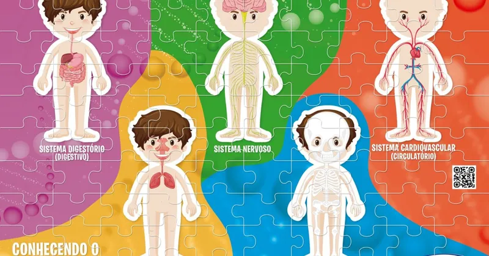
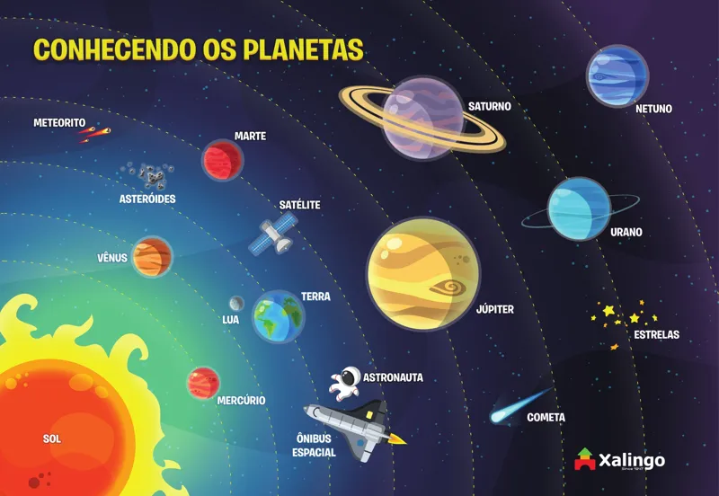

Monte o quebra-cabeça Interactive Play e use o celular para descobrir os conteúdos em 3D, com narração e realidade aumentada. Funciona direto no navegador, sem instalar nada.
Escolha o seu produto

6+ anosQR code3DRealidade aumentada
Conhecendo o Corpo HumanoSTEAM Interactive Play · ref. 53309
Escaneie o QR code do quebra-cabeça e explore os 5 sistemas do corpo: toque nos órgãos, acompanhe o caminho da comida e do ar e ganhe medalhas e um certificado. O jogo da memória é liberado para todos.
Abrir ›
4+ anosCâmera3DRealidade aumentada
Conhecendo os PlanetasSTEAM Interactive Play · ref. 53265
Monte o quebra-cabeça, aponte a câmera e veja os planetas saírem do tabuleiro em 3D. Pilote a nave e complete o álbum dos astros.
Abrir ›💡 Dica: abra no Safari (iPhone) ou no Chrome (Android), e não dentro do Instagram ou do WhatsApp, para a câmera funcionar. Quando o navegador perguntar, permita o uso da câmera.